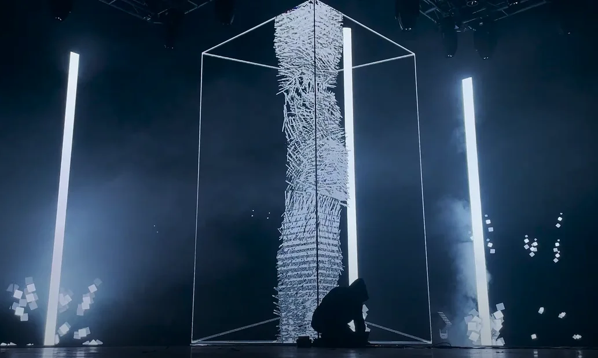
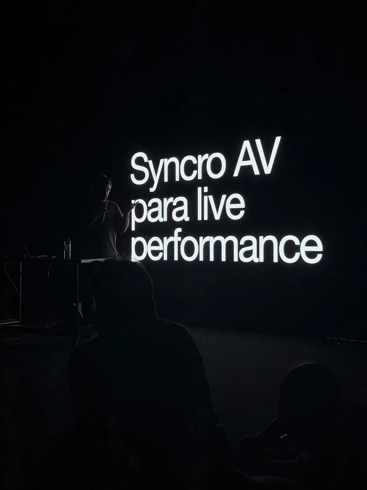

01 / El workshop
Syncro A/V
para live performance
Del set a la escena.
Aprender y experimentar en un set real. Explorar las mismas técnicas de sincronización que utilizan los artistas en sus shows.
Un taller para trabajar implementaciones de sincronización aplicadas al control de video, iluminación y sonido en un ámbito profesional. Los dispositivos escénicos se analizan desde lo técnico y lo performativo; después, cada participante puede probar sus propias ideas sobre ese set.
Dirigido a artistas y técnicos que quieran adquirir o profundizar conocimientos para desarrollar shows audiovisuales o interactivos. Nivel inicial e intermedio.
Video
Visuales y control en tiempo real.
Luz
Iluminación y dispositivos escénicos.
Sonido
Sincronización para la performance.

02 / Formato
Dos días de trabajo.
Una muestra abierta.
Experimentar. Crear en vivo.
- Encuentros
- 2 encuentros de 3 horas, con un break
- Duración total
- 6 horas
- Nivel
- Inicial / intermedio
- Cupo
- Máximo 40 participantes
- Cierre
- Presentación abierta de lo producido
- Arancel
- Consultar
Podés traer los equipos con los que ya trabajás: computadora, consola u otros dispositivos, para experimentar con tus ideas dentro del set.
Propuesta para Festival Multiversos / Misiones
El cronograma del documento propone encuentros el jueves 10 y viernes 11, por la tarde/noche, y una muestra abierta el domingo 13/12. El año y la realización de estas fechas están a confirmar.
Antecedente: workshop de 3 horas dictado en Ciclo Negro, ARTHAUS, piso 7, Sala Oval, Buenos Aires.
03 / Manuel Palenque
Artista visual.
Tecnólogo creativo.
Fundador de DataRaiz.
Arte y tecnología,
en práctica.
Más de 15 años de experiencia en experiencias audiovisuales inmersivas e instalaciones interactivas. Su trabajo conecta el arte con tecnologías avanzadas, con proyectos y actividades educativas en Tokio, Hong Kong, Berlín y Estados Unidos.
Ha dictado talleres de tecnologías interactivas en universidades e instituciones culturales de distintos países. Fundó y dirige DataRaiz, un estudio y comunidad de arte y tecnología que impulsa formación y experimentación abierta.
04 / Live A/V
40 minutos
2 performers
Visuales en vvvv
COLAPSO
Entre el orden y el caos.
Entre el control y la desintegración.
Una performance audiovisual en vivo que explora el colapso y la entropía. Sistemas de partículas desarrollados en vvvv generan visuales en tiempo real, sincronizados con la música en vivo.
La puesta se ensaya y previsualiza en un digital twin 3D del escenario, con sus pantallas y luces, antes del montaje real.

05 / Producción
Requerimientos
y condiciones
El espacio también
es parte del set.
Workshop / Equipamiento y espacio
- Sala con oscuridad controlada y capacidad para el cupo previsto.
- Pantalla LED o proyector de buena calidad y sistema de sonido.
- Mesa para el set técnico, acceso a internet y dispositivos escénicos para los ejercicios.
- Luces DMX.
- Los participantes pueden traer computadoras, consolas y sus propios equipos.
COLAPSO / Rider técnico
Video
Visuales escalables a pantallas LED custom, proyección de gran escala y relaciones de aspecto no estándar. LED de al menos 1.200 nits, o proyección con al menos 300 nits de luminancia en superficie y contraste nativo de 10.000:1.
Oscuridad
Oscuridad total o casi total, sin contaminación de luz ambiente. La pieza depende de negros absolutos.
Audio
Salida estéreo L/R desde la estación de performance, dos cajas directas activas balanceadas, PA profesional full-range y sub-bajos capaces de reproducir graves limpios, sin distorsión.
Escenario
Estación para dos performers con corriente estabilizada, frente a la pantalla.